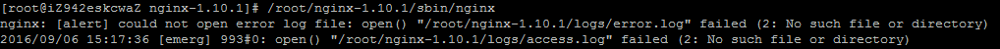
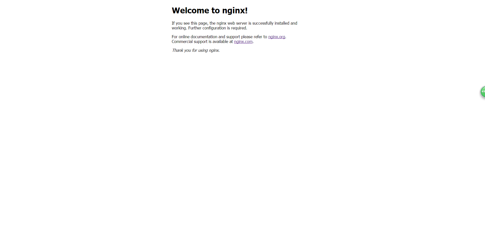
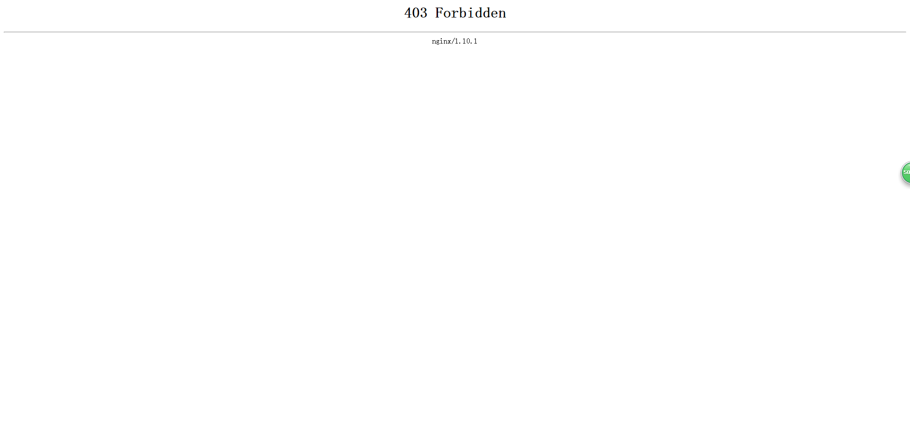

时间：2016-08-30
首先，安装PCRE库
1、下载 PCRE 安装包
- [root@iZ942eskcwaZ root]# wget http://downloads.sourceforge.net/project/pcre/pcre/8.35/pcre-8.35.tar.gz
2、解压安装包
- [root@iZ942eskcwaZ root]# tar zxvf pcre-8.35.tar.gz
3、进入安装包目录
- [root@iZ942eskcwaZ root]# cd pcre-8.35
4、编译安装
- [root@iZ942eskcwaZ pcre-8.35]# ./configure
- [root@iZ942eskcwaZ pcre-8.35]# make && make install
5、查看版本
- [root@iZ942eskcwaZ pcre-8.35]# pcre-config --version
安装nginx
1、下载 Nginx,地址
- [root@iZ942eskcwaZ root]# wget http://nginx.org/download/nginx-1.6.2.tar.gz
2、解压安装包
- [root@iZ942eskcwaZ root]# tar zxvf nginx-1.6.2.tar.gz
3、进入安装包目录
- [root@iZ942eskcwaZ root]# cd nginx-1.6.2
4、编译安装
- [root@iZ942eskcwaZ nginx-1.6.2]# ./configure --prefix=/root/nginx-1.6.2 --with-http_stub_status_module --with-http_ssl_module --with-pcre=/root/pcre-8.35
- [root@iZ942eskcwaZ nginx-1.6.2]# make
- [root@iZ942eskcwaZ nginx-1.6.2]# make install
5、查看nginx版本，是否安装成功
- [root@iZ942eskcwaZ nginx-1.6.2]# /root/nginx-1.6.2/sbin/nginx -v
如果，make出错的话，安装ssl
1、进入安装包目录
- [root@iZ942eskcwaZ root]# wget https://www.openssl.org/source/openssl-1.0.1t.tar.gz
2、解压
- [root@iZ942eskcwaZ root]# tar -zxvf openssl-1.0.1t.tar.gz
启动nginx
- [root@iZ942eskcwaZ nginx-1.6.2]# /root/nginx-1.6.2/sbin/nginx
如果报以下错误
在/root/nginx-1.6.2目录下新建一个logs目录，然后再次启动就ok了
打开浏览器，输入以下url
- http://xxx.xxx.x.x:8080 // 8080为端口号，请根据自己端口号配置情况输入url
出现以下页面就表示nginx搭建好了
如果出现以下错误
修改/root/nginx-1.6.2/conf目录下的nginx.conf文件，增加一句
- user root;
以上。